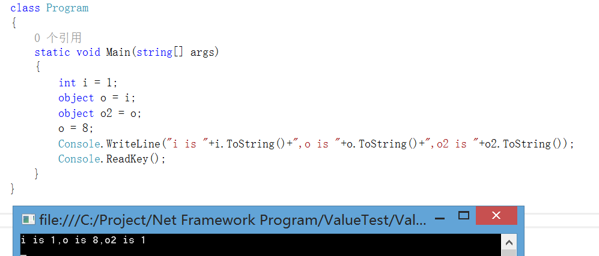
从这个简单程序的输出结果，你想到了什么?是不是与你心中想的结果不一致?是不是觉得输出的结果应该为：i is 1,o is 8,o2 is 8
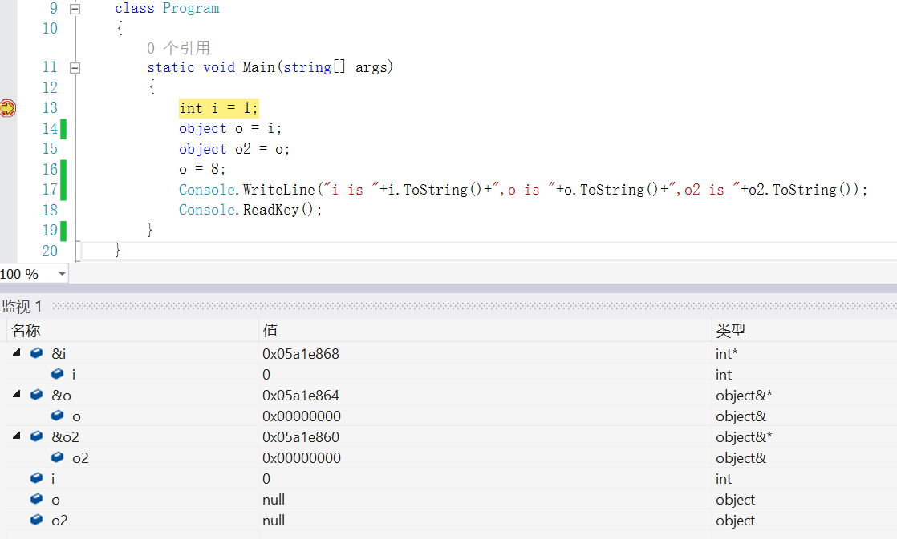
图 2
我们都知道，每一个方法在执行前，操作系统会给方法内每个变量分配内存空间。从图2中就可以看出，在执行前各变量(i,o,o2)已分配了内存，且各自都有初始值。
从图中，可以发现变量i和变量o,o2有些许不同。变量i在内存中存储的值和程序中的值是一样的，都是0；变量o,o2在内存中存储的值和程序中的值不一样，内存中存储的值是一个地址(0x00000000)，程序中的值是null，那变量o,o2的null值存储在哪呢?为什么变量i和变量o,o2会有如此大的不同呢?
我们都知道，C#有两大类型：值类类型和引用类型。图2中int属于值类型，object属于引用类型。接下来，介绍一下值类型和引用类型：
园中有很多博文这么描述，我用程序验证了一下全局的值类型变量的值，静态的值类型变量的值，引用类型实例中值类型成员的值，如下图3
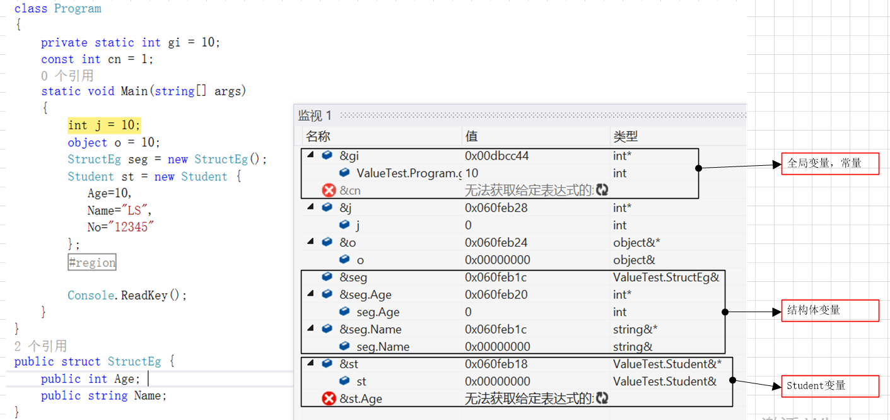
图 3
从图中，可以看出变量(j,o,seg,st)的值应该是在同一个存储区域中，而变量(gi)是在另外一个存储区域中。引用类型Student的成员Age的地址还未分配。所以说值类型的值存储在内存栈上是不准确的。
查找了一些资料，内存格局分为四个区：
1）全局数据区：存放全局变量，静态变量，常量的值
2）代码区：存放程序代码
3）栈区：存放为运行而分配的局部变量，参数等
4）堆区：自由存储区。
更为准确的说，方法体内的值类型变量的值存储在内存栈上，引用类型变量的值存储在内存堆上。由于对象实例是引用类型变量的值，而对象实例成员只是对象实例的一部分，所以其随对象实例整个存储在内存堆上。
或许眼尖的园友发现了，上面那句话还是不对，结构体StructEg的引用类型成员Name的数据就没有存储在内存栈上。从图3看，结构体变量seg的数据分成两部分，值类型成员数据存储在内存栈上，引用类型成员数据存储在内存堆上。
所以确切的说：方法体内的预定义的值类型(如int,bool,char)变量的数据存储在内存栈上，引用类型变量的值存储在托管堆中，结构体的值类型成员的值存储在内存栈上，结构体的引用类型成员的值存储在内存堆中。(下面介绍的值类型基本是预定义的值类型和只包含值类型成员的结构体，一般包含引用类型成员的都定义成类)
这句话怎么理解呢?这句话中关键词是”存储”，其实还是在描述程序中的变量在内存栈中的表现。
值类型变量在内存栈中存储的是其在程序中的变量值，引用类型变量在内存栈中存储的是其程序中的值在内存堆中的引用。(当然值类型变量和引用类型变量都是方法体内的局部变量或参数)
1）分配内存堆空间：我们都知道要存储数据，首先得申请内存空间。引用类型变量在new实例化时，系统在内存堆中分配空间。
2）更新地址：把引用类型变量在内存栈中存储的值更新成新的值(新值为新分配的内存堆的首地址)。至此，引用类型变量指向了新的内存空间。
3）填充值：把初始化值填充到内存堆中。
可能有些园友会说，了解这个有什么意义呢?那我就简单的说一个现象：
1）在学习方法理论时，传参会有这样的描述：值类型按值传递，传递的是对象的副本，对已调用方法中的对象的更改对原始对象无影响；引用类型的对象按值传递传递的是对对象的引用，使用此引用更改对象的成员，此更改将影响原始对象。
其实，这里究其原理，就是因为值类型与引用类型的值的不同存储位置，来描述其传参后的影响。
所以，有时我们为了影响值类型实参的值，而在形参前面加ref或out；有时我们为了不影响引用类型实参的值，而采用深拷贝的方式传递参数值。
理论是为了指导实践，当了解了其原理，在实践时，我们才会显得踏实。
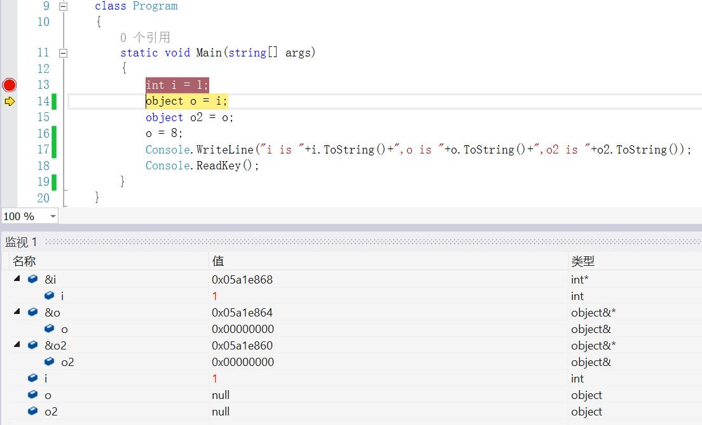
从图中可以看出，执行后，值类型变量在内存中存储的值和其在程序中的值是一样的，都是1。
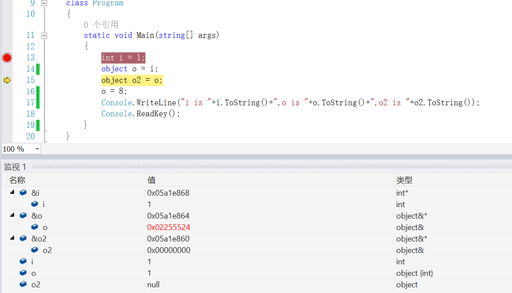
图 5
从图中可以看出，引用类型变量o的值变成1了，在内存栈中存储的值更新成新地址了。通过前面分析，我们知道变量o指向了1的新地址。值类型变量的值存储在内存栈中，引用类型变量的值存储在内存堆中，内存栈中的值是如何到内存堆中的?这就是本节要介绍的第二个重要概念，装箱和拆箱。
园中很多博文介绍：值类型转换为引用类型，就叫装箱。我觉得这表述不太准确，如下图6
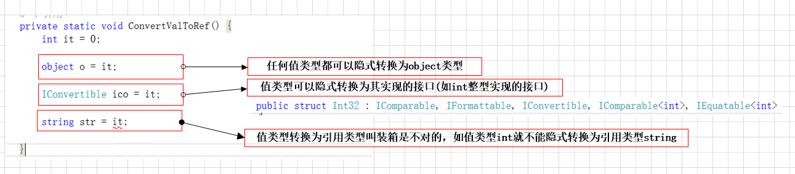
图 6
从图6中可以看出，值类型不能随意的转换为引用类型，它只能隐式转换为以下两种引用类型：
1）object类型；
2）值类型实现的接口
前面已介绍了引用类型变量赋值过程了，装箱步骤也类似：
1）分配新的内存空间
2）更改地址
3）填充值：从值类型变量处拷贝一份值，存储到新分配的内存堆中。
object 类型到值类型或从接口类型到实现该接口的值类型的显式转换。1）检查对象实例，以确保它是给定值类型的装箱值。若不能显式转换，则抛异常。
意思是：装箱时的值类型和拆箱时的值类型要完全一致(哪怕类型兼容也不行，如下图7中的装箱前的类型是short，拆箱后的类型是int，就会产生异常)。如图7
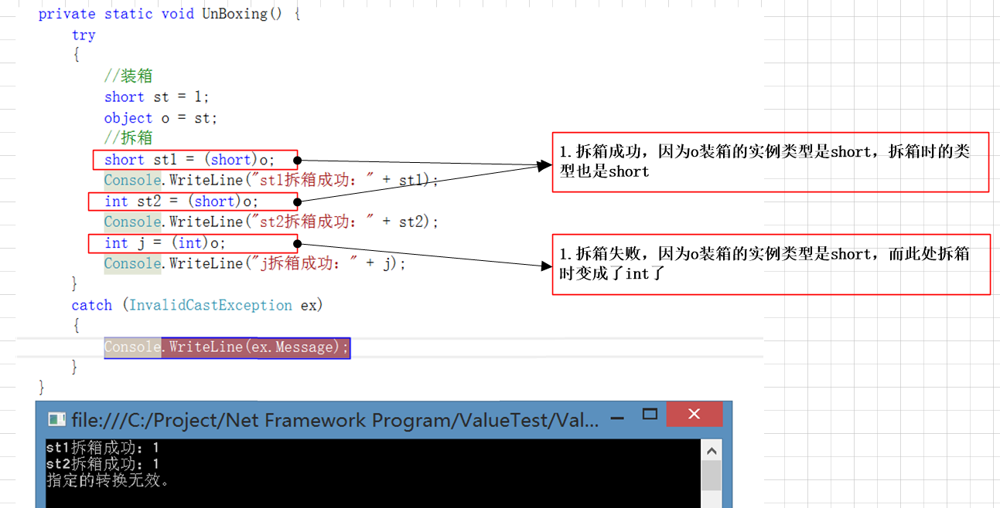
图 7
2）验证成功后，复制实例的值到值类型变量中
相对于简单的赋值而言，装箱和拆箱过程需要进行大量的计算，所以其对性能会有较大的损耗。特别装箱时，要创建新的对象实例，要在内存堆上分配新的内存空间，在分配新的内存空间时，可能会引起垃圾回收(垃圾回收对性能损耗非常大，具体垃圾回收为什么会有很大的性能损耗，网上相关介绍很多，在此不做介绍)。
或许有园友会说，平时装箱/拆箱操作不多，其实在你不经意间，存在很多装箱操作
1）string s=string.Format(“{0}”,i);//i为值类型数据---典型的字符串格式化
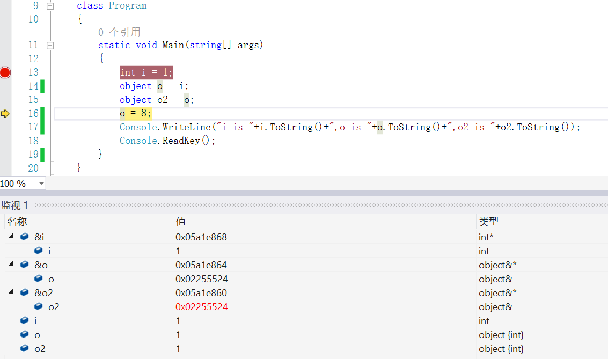
图 8
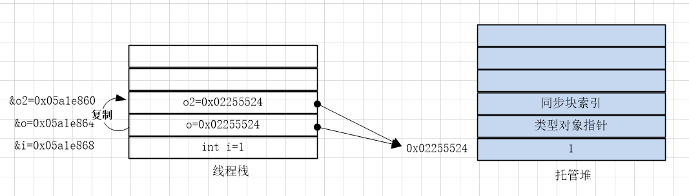
图 9
无论是值类型变量赋值还是引用类型变量赋值，都是把数据复制一份，然后赋给另一个变量。只是引用类型变量在内存栈中存储的是其值在内存堆中的地址。所以引用类型变量间赋值，就使两个变量指向了同一个内存堆空间。如上图8，图9
此时，或许有人会说，这句不是表示对引用类型变量进行操作吗?赋值了8后，它在内存堆内的值应该是8了，由于o2与o都指向内存堆内的同一个地址，所以o2的值也应该也是8。
呵呵，请注意，8是值类型，o是引用类型，类型不一样，要进行装箱操作，装箱的过程中会创建新的实例分配新的内存空间。所以引用类型变量o指向了新的内存堆空间了，由于引用类型变量o2没有做任何操作，所以此时引用类型变量o和o2在内存栈中存储的地址不一样了，指向的内存堆地址也不一样了，所以它们的值也就不一样了。如下图10，图11
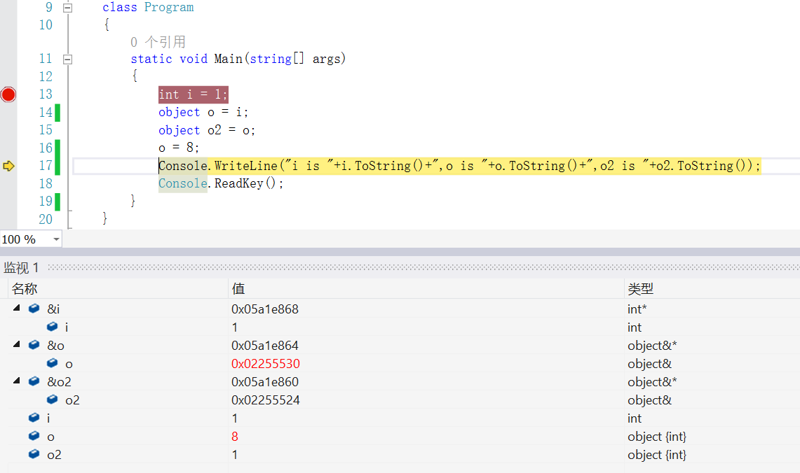
图 10
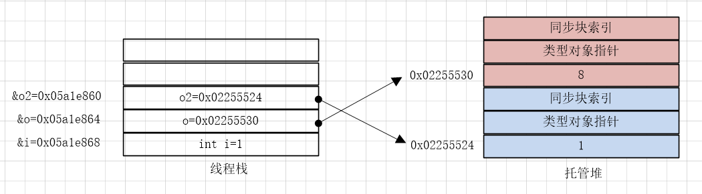
图 11
那如何让o的值改变，o2的值也同时变化，就要改变o对应的内存堆内的值。
所以最后结果的值是：i is 1,o is 8,o2 is 1
通篇通过一则简短的赋值程序，介绍了
1）C#两大类型：值类型与引用类型
2）值类型与引用类型互相赋值，引出的装箱、拆箱操作
其中简要介绍了装箱操作会有比较大的性能损耗，特别是垃圾回收。
最后，通过两张图来简要概括下本篇博文的内容：
1）C#两大类型：
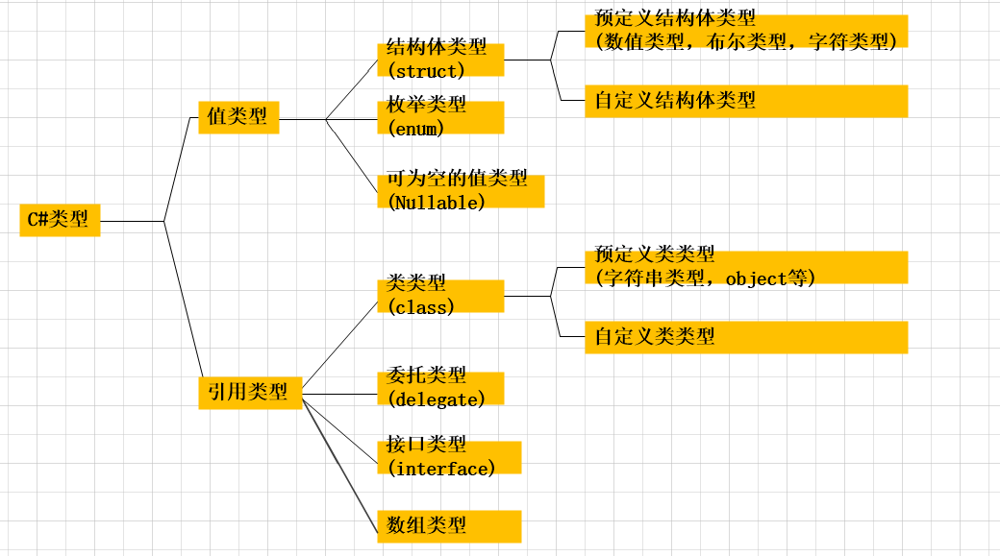
2）变量赋值
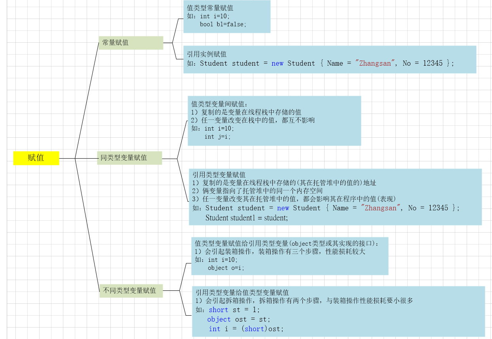